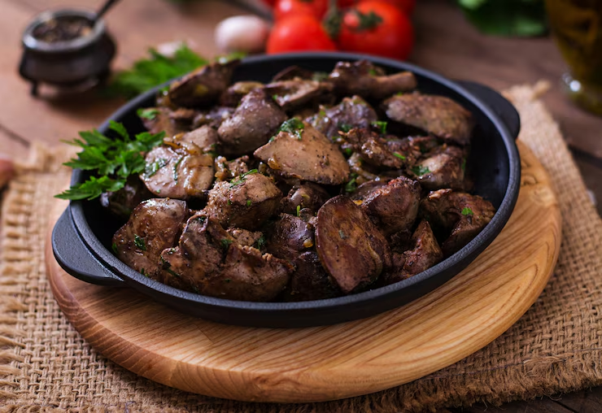
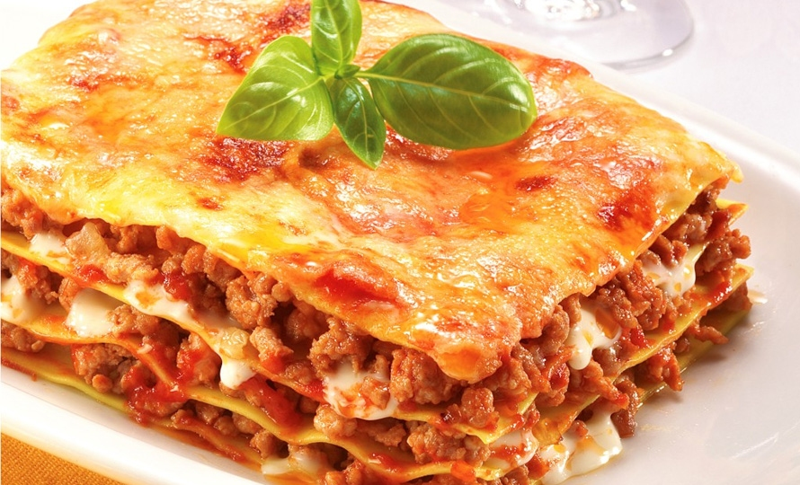
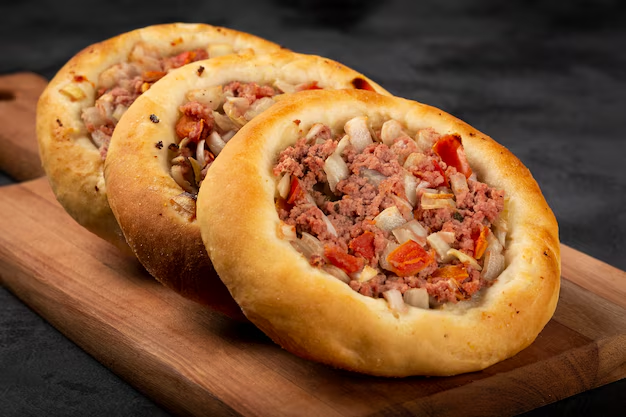
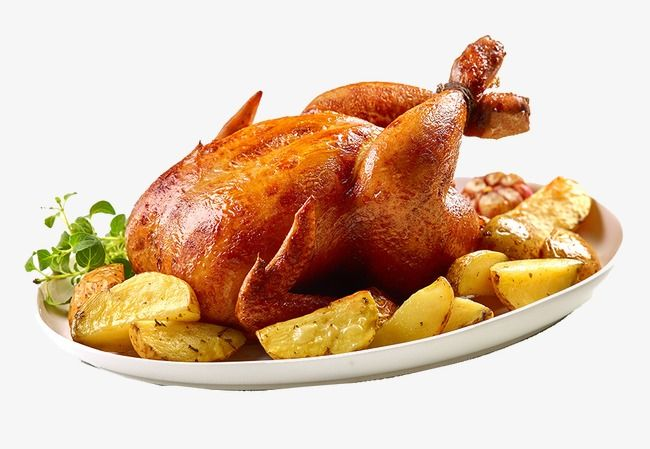
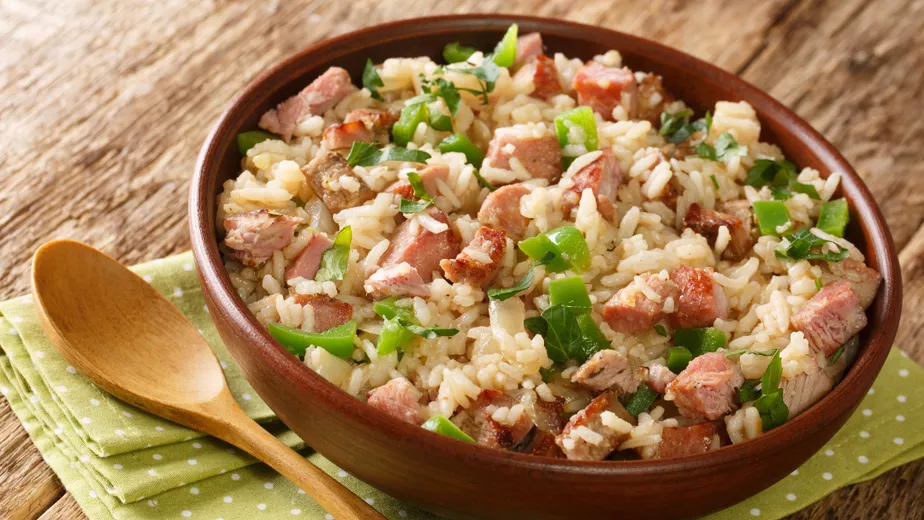
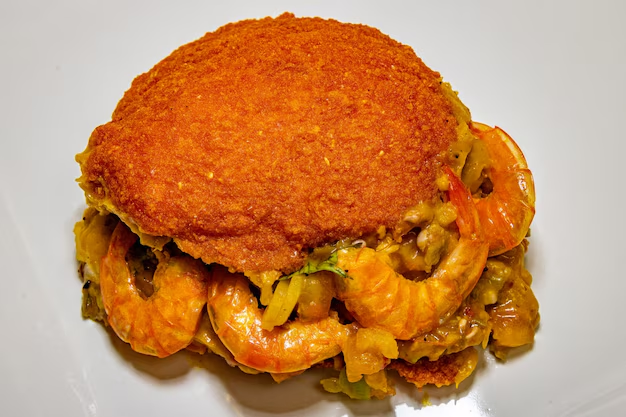

exemplo:
Se o café ficou muito forte ou amargo, uma simples pitada de sal (bem pouquinho mesmo!) ajuda a equilibrar o sabor sem precisar exagerar no açúcar.
figado assado
lasanha
batata frita
esfirra de carne
frango de forno
carne de porco
arroz carreteiro
acarajé
